A hyperelastic membrane wing with a carbon-rod leading edge, chordwise carbon digits, embedded rolled dielectric elastomer actuators (DEAs) and optional reinforcement strips, loaded by quasi-steady thin-airfoil aerodynamics. Every number on this page is computed live by the same Python file (model.py) that is checked against analytical solutions and compared with the available measurements below. Nothing is animated, fitted on the fly or randomised. It is a model, not measured flight data.
Root on the left, leading edge at the top, drawn on the deformed in-plane positions. Red: DEAs; black: carbon rod and digits; grey: reinforcement strips and trailing-edge cord; dashed: clamped edges.
Each sweep re-solves the current design point by point (warm-started), so curves can be compared directly with measurements: camber from a side camera or laser line at mid-span, lift, vertical force and thrust from the load cell, DEA strain from markers on one DEA, rod-tip displacement from a top camera, chord tension from the clamp force on the bench (set $U$ = 0). The carbon rod makes the solver slower: sweeps can take minutes in the browser; a 12 × 6 mesh is about three times faster (lift within 1 %, lift change within 4 %, see V7).
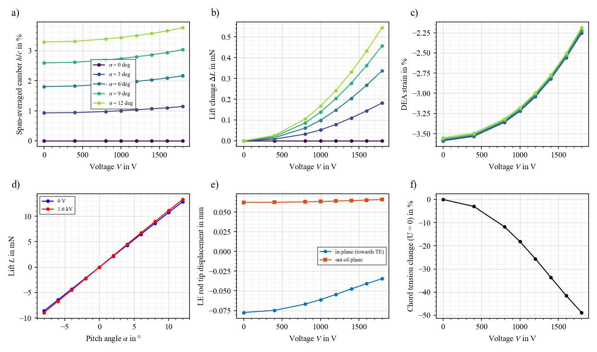
P1, quasi-static: a) camber $h/c$ vs $V$ per pitch angle; b) lift change $\Delta L$ vs $V$; c) DEA strain vs $V$; d) lift vs pitch angle, 0 V and 1.6 kV; e) LE rod-tip displacement vs $V$; f) bench-like total chord tension change at $U$ = 0.
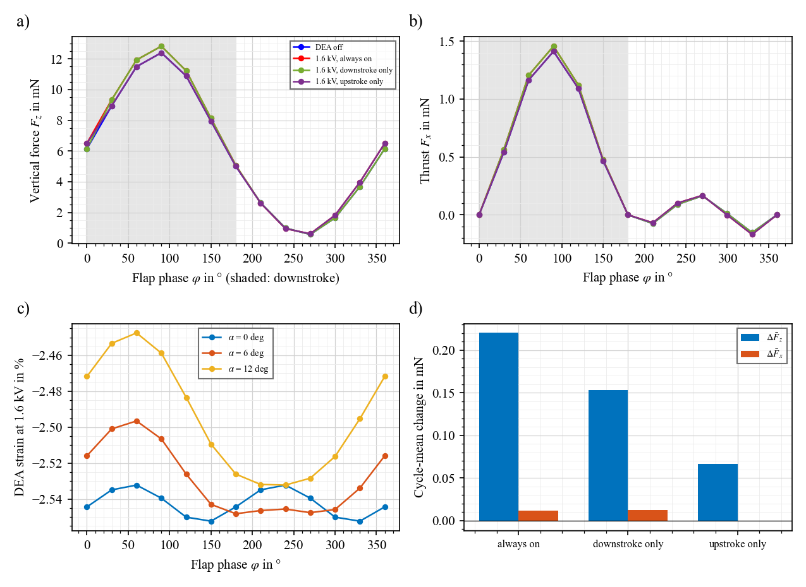
P2, quasi-steady flapping (3 Hz, Φ0 = 30°, α = 6°): a) vertical force over the cycle for DEA off, always on, downstroke only and upstroke only; b) thrust; c) DEA strain over the cycle; d) cycle-mean changes. Assumes the DEA switches within a half-stroke (not yet measured).
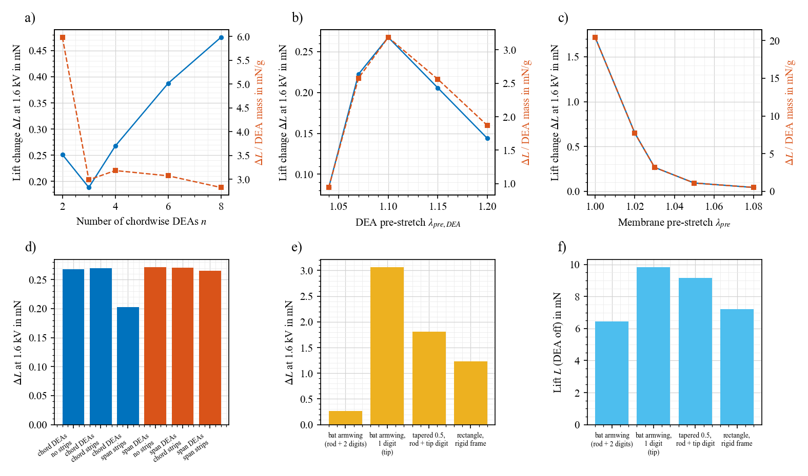
P3, design trends at 1.6 kV: a–c) $\Delta L$ and $\Delta L$ per DEA mass vs number of DEAs, DEA pre-stretch and membrane pre-stretch; d) DEA direction × reinforcement direction; e–f) planform comparison. Data: predictions.csv, predictions.json.
Notation follows Konstantinidi et al., Smart Mater. Struct. 32 (2023) 125011 and Compos. Sci. Technol. 258 (2024) 110849. In-plane axes: $x$ spanwise (root to tip), $y$ chordwise (LE to TE); $w$ is the out-of-plane deflection and $\lambda_z$ the thickness stretch. SI units. Each block names the function in model.py that implements it.
Wing.membraneConstant-strain triangles, total Lagrangian. The membrane is cut smaller and stretched onto the frame: reference coordinates $X = x_\text{frame}/\lambda_{pre,x}$, $Y = y_\text{frame}/\lambda_{pre,y}$. With the in-plane deformation gradient $\mathbf F$ (3 × 2) and incompressibility $\lambda_x\lambda_y\lambda_z = 1$:
with $\mathbf a_0 = [1\;0]$ for the spanwise and $[0\;1]$ for the chordwise family.
MATERIALS, calibrate.py, fit_p7670.pyThe constants are fitted to measured uniaxial nominal stress (non-negative least squares). The wing membrane is not reinforced with stiff fibres: its anisotropy comes from the compliant silicone features of the composite, and $v_fE_f$ is their effective contribution. Valid to $\lambda = 1.22$. Compressive principal stresses are set to zero (wrinkling; a small residual can be kept for regularisation, default 0).
| Material | $C_1$ (Pa) | $C_2$ (Pa) | $v_m$ | $v_fE_f$ chord (Pa) | $v_fE_f$ span (Pa) | fit rms |
|---|---|---|---|---|---|---|
| Anisotropic composite membrane | 5 636 | 15 841 | 0.577 | 143 990 | 68 770 | 0.87 / 0.45 kPa |
| Wacker P6760 | 5 636 | 15 841 | 1 | – | – | 0.41 kPa |
| DragonSkin 20 | 63 051 | 0 | 1 | – | – | 0.40 kPa |
| Elastosil P7670 (DEAs) | 42 842 | 447 | 1 | – | – | 0.58 mN on the 5-DEA bundle |
Wing.bar_forcesEach rolled DEA is a bar of reference section $A_0 = w\,(H+H_p)$ (strip width $w$, dielectric thickness $H$, passive thickness $H_p$, $\chi = H/(H+H_p)$), mounted at pre-stretch $\lambda_{pre,DEA}$. From the equation of state of the ideal DEA, $\sigma_x-\sigma_z=\lambda_x\,\partial W/\partial\lambda_x-\varepsilon_0\varepsilon_r\chi\lambda_x^2\lambda_y^2 V^2/H^2$, with the roll free to contract laterally ($\lambda_y=\lambda_z=\lambda^{-1/2}$) and the force taken on the current section $A_0/\lambda$:
$\Delta F$ does not depend on stretch. $\eta$ is the ratio of measured to ideal force change: 0.39–0.41 from the isometric pulses at $\lambda$ = 1.12 (default 0.40), but only 0.03–0.15 from the quasi-static cycles on the same bundle (see C1–C2). At 1.6 kV and $\eta$ = 0.40, $\Delta F$ = 8.46 mN per DEA, against a passive force of 14.1 mN at $\lambda_{pre,DEA}$ = 1.10, so the DEA loses 60 % of its tension. If $F$ reaches zero the DEA is slack and more voltage does nothing (flagged). Breakdown: $E = V\sqrt{\lambda}/H \lt E_{BD} = 100$ V/µm.
Wing.bar_forcesWing.rod_bendingThe LE rod is cantilevered at the root; each digit leaves the rod at a stiff joint. The clamp uses a mirrored ghost node $\mathbf x_g=\mathbf x_1-2h\,\mathbf t$ (second-order accurate, V8). Bending is resolved in and out of plane. The rods' axial stiffness is capped for the explicit solver (they are effectively inextensible; V8 shows the result changes by ±4 % for a cap of 50–400 N).
Wing.residualMembrane tension in the current configuration: $\mathbf n = \frac{H_m}{\sqrt{\det\mathbf C}}\,\mathbf F\mathbf S\mathbf F^{\mathsf T}$ (N/m, $H_m$ the membrane thickness); "total chord tension" adds $\sum F_\text{DEA}/b$.
Wing.glauert, Wing.pressure_forcesAt each spanwise station the deformed section is referred to its own LE–TE chord ($c_\ell$, $\xi = (y-y_{LE})/(y_{TE}-y_{LE}) = \tfrac12(1-\cos\theta)$, camber line $z_r(\xi)$, local incidence $\alpha_\ell=\alpha+\arctan\frac{w_{LE}-w_{TE}}{y_{TE}-y_{LE}}$). Thin-airfoil theory with the exact integrals of the piecewise-linear camber line:
$\Delta C_p$ is averaged exactly over each cell (the LE singularity is integrated, not sampled) and applied as a follower pressure normal to the deformed element. Load and shape are solved together (static aeroelasticity). Attached flow only: warning above 12°.
Wing.flow_state, dea_activeThe pitch angle $\alpha$ (geometric, set by the mounting) and the stroke are independent inputs; the stroke changes the effective angle through the plunge velocity $\Omega x$:
Membrane, DEA and rod inertia: $f_z=-m\dot\Omega x$, centrifugal $f_x = m\Omega^2x$. Downstroke: $\Omega \lt 0$ ($0 \lt \varphi \lt 180°$). DEA schedules: always on, downstroke only, upstroke only, assuming the DEA follows within a half-stroke. Reduced frequency $k=\pi fc/U$ (warning above 0.2).
Wing.solveDynamic relaxation with kinetic damping: $m_i\dot{\mathbf v}_i=\mathbf R_i$ with fictitious masses $m_i = 0.6\,S_i$ ($S_i$ a Gershgorin bound on the nodal stiffness), velocities reset at kinetic-energy peaks, load ramped over 400 steps, aerodynamics updated every 10 steps; converged when $\max|\mathbf R| \lt 10^{-4}F_\text{ref}$. The DEA-on state starts from the DEA-off state.
Smeared theory replaces the DEAs by a uniform chord tension $T_y+nF/b$. With discrete DEAs at spacing $s=b/n$, the membrane between two DEAs sags under its own spanwise tension $T_x$, and the DEAs control only the sag of the tendon line (tributary width $s$):
Case V5 (rigid frame, 0.3 Pa, $F$ = 14.1 mN, $\Delta F$ = 8.5 mN, $T_y$ = 0.96 N/m, $T_x$ = 0.56 N/m, $s$ = 17.5 mm, $c$ = 35 mm): $w_\text{tendon}\approx 26$ µm, $w_\text{between}\approx 20$ µm, so $\delta w/w\approx0.56\times38\,\%\approx21\,\%$. FE: 24.8 %; exact discrete-tendon series: 25.3 %; smeared theory: 32.7 %. Design consequence: closer DEAs (smaller $s$) or a stiffer spanwise membrane put more of the deflection under DEA control.
Does the code solve the equations above correctly? Generated by validate.py; numbers in validation.json.
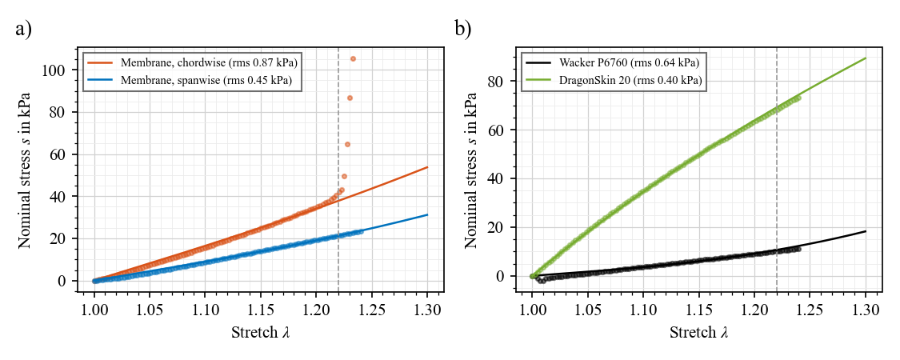
V1: strain energy vs measured uniaxial curves: a) anisotropic membrane, b) isotropic silicones.
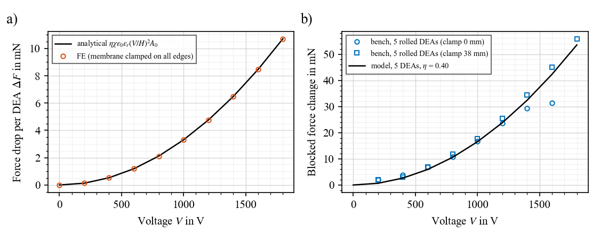
V3: a) DEA force drop in the FE equals $\eta\chi\varepsilon_0\varepsilon_r(V/H)^2A_0$; b) isometric bench data used for $\eta$.
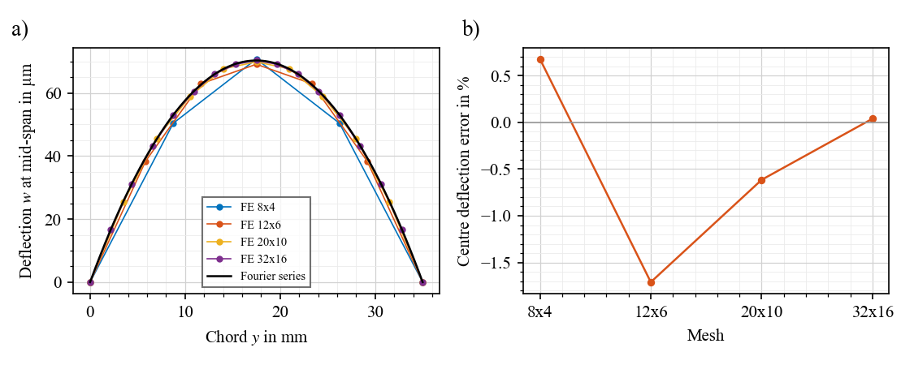
V4: pre-stressed membrane under uniform pressure vs the Fourier series of $T\nabla^2w=-p$, and mesh convergence.
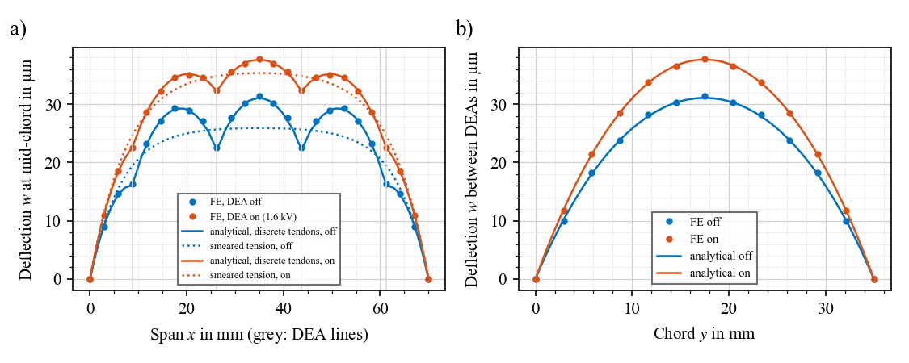
V5: DEA authority; FE vs an independent discrete-tendon series with all inputs analytical (dotted: smeared tension).
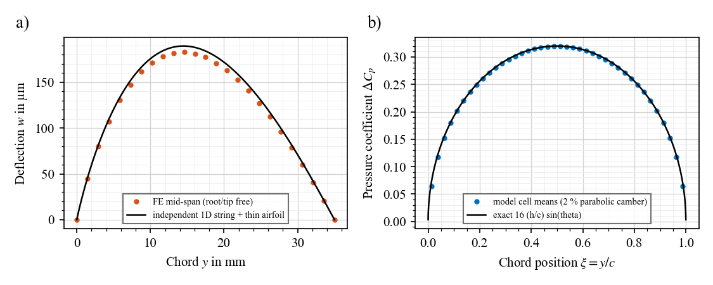
V6: aeroelastic chord vs an independent 1D string with thin-airfoil loading; Glauert loading vs exact.
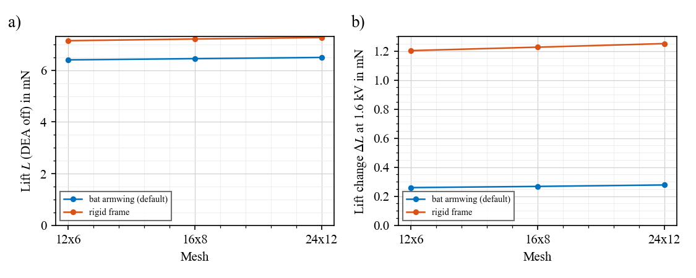
V7: mesh convergence of lift and lift change for the bat armwing and the rigid frame.
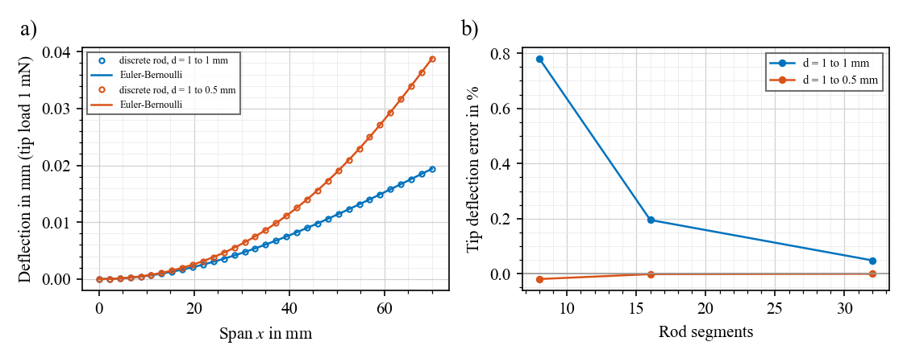
V8: carbon rod vs Euler–Bernoulli cantilever, uniform and tapered, and convergence (second order).
What the model says about data already collected, generated by compare.py (comparison.json). The measured data are sparse (often one wing, one campaign), the test wings are larger than the default and their DEA layouts are only approximately known, so these are consistency checks, not validation.
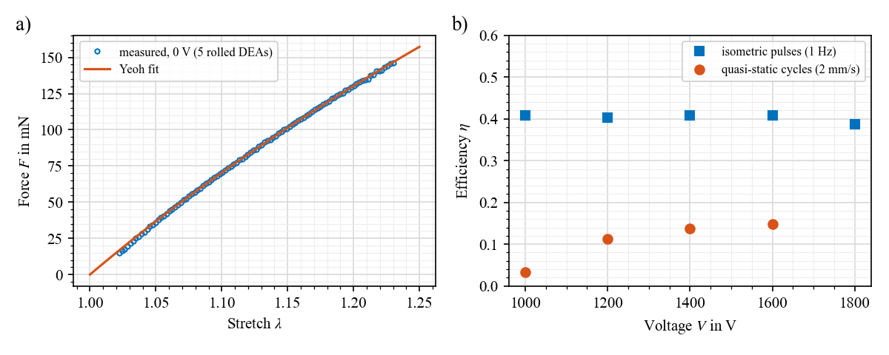
C1: a) P7670 Yeoh fit on the five-DEA bundle at 0 V; b) efficiency $\eta$ from the two bench methods.
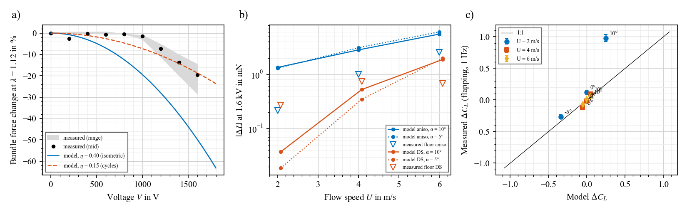
C2–C4: a) bundle force change at $\lambda$ = 1.12, measured vs model; b) predicted lift change on the static wings vs the measured detection floor; c) measured vs predicted $\Delta C_L$ in flapping.
Local use: python model.py, python validate.py, python predict.py, python compare.py; needs numpy (scripts also scipy, pandas, matplotlib).